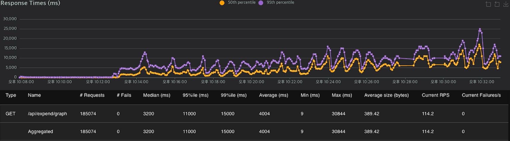
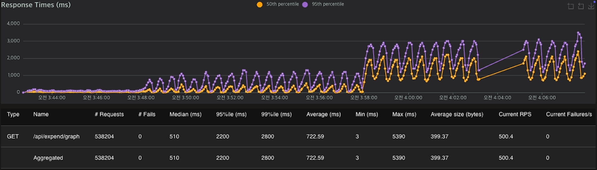
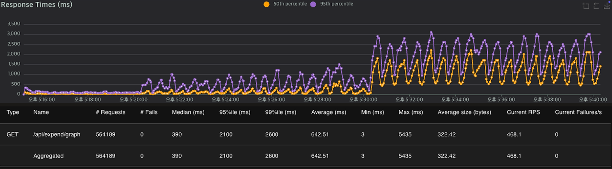
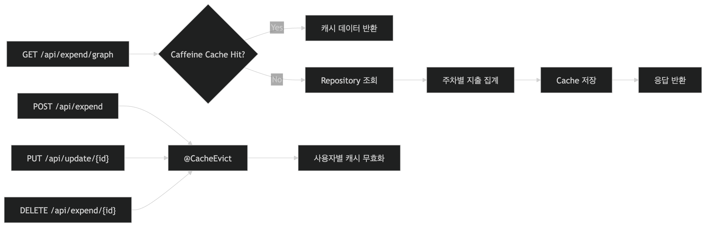
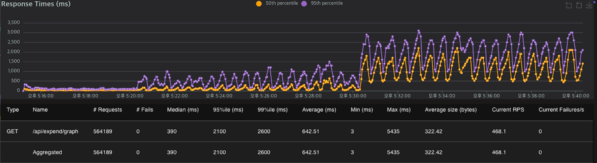
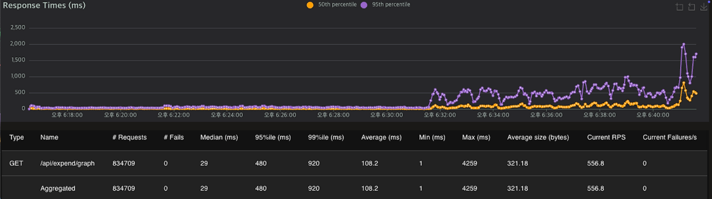
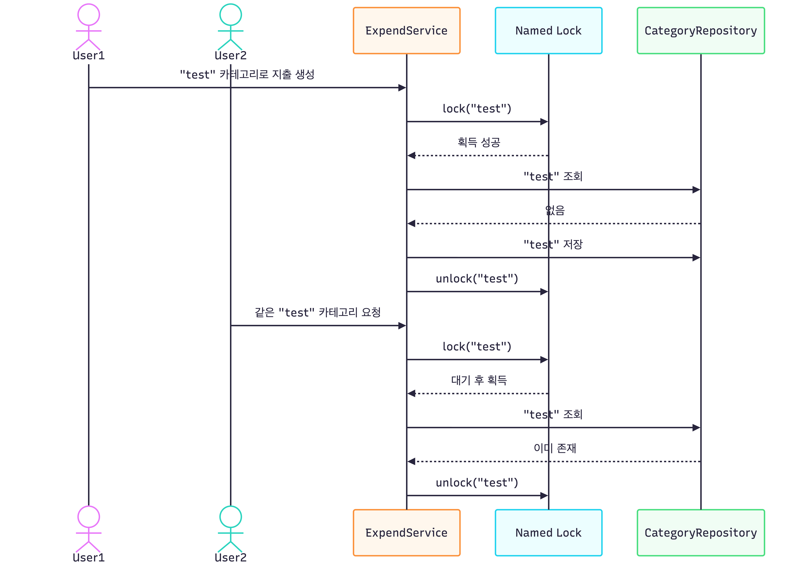

사용자의 소비와 저축 흐름을 기록에만 머무르지 않고, 목표 관리, 예정 결제 추적, 카테고리별 예산 통제, AI 기반 주간 피드백까지 확장해 스스로 재무 상태를 해석하고 관리할 수 있도록 만든 개인 재무 관리 시스템.
Backend Engineer로 참여해 지출/수입 도메인, 집계 응답 설계, 카테고리 동시성 제어, 배포 자동화 구간을 맡았습니다. PDF 포트폴리오 기준 핵심 기여는 백엔드 45%, DevOps 100%, 기획 20%, 전체 기여도 20%입니다.



/api/expend/graph는 지출 그래프를 그리기 위한 핵심 조회 API였고, 1000명 동시 요청과 100만 건 더미 데이터 기준 부하 테스트에서 평균 4004ms, P95 11000ms 수준까지 응답이 지연되고 있었습니다. Locust, Prometheus, Grafana를 통해 실제 병목 구간을 먼저 확인했습니다.



쿼리와 커넥션 풀 튜닝 이후에도 /api/expend/graph는 조회 빈도가 높은 API였기 때문에, DB를 매번 타지 않도록 캐시를 적용하는 것이 가장 큰 개선 포인트로 남아 있었습니다.

사용자가 새로운 지출 카테고리를 직접 추가할 수 있었는데, 여러 사용자가 동시에 같은 이름의 custom category를 등록하면 중복 insert가 발생하는 Race Condition이 존재했습니다.